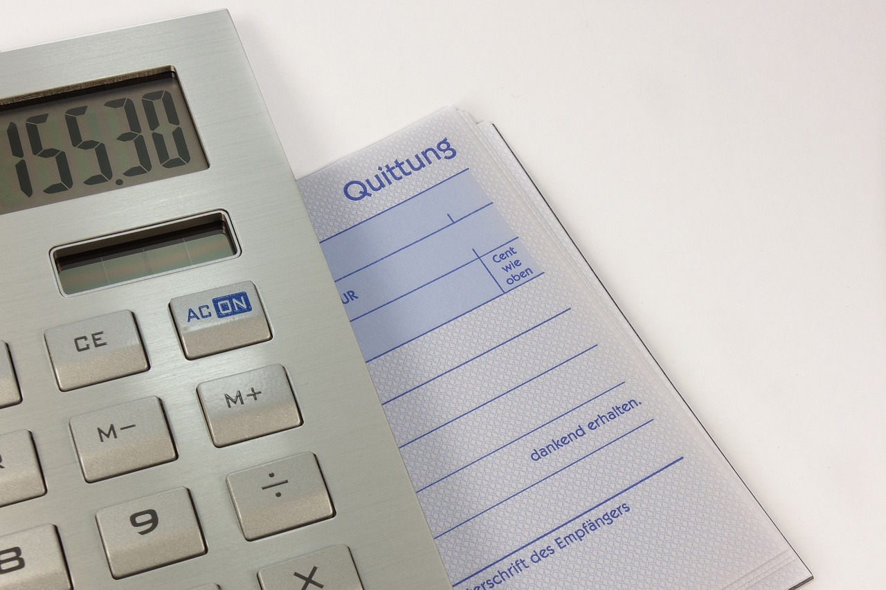

Gestiona tus deudas de forma saludable
Publicado el 16 de mayo de 2025 Tener deudas no significa necesariamente estar en una mala situación financiera. Muchas veces, un crédito puede ayudarte a alcanzar metas importantes. Lo clave es cómo manejas esa deuda. Una gestión inteligente puede marcar la diferencia entre una carga y una herramienta útil.
1. Haz un inventario de tus deudas
El primer paso es tener claro cuánto debes, a quién, con qué interés y en qué plazos. Anota todos tus préstamos, tarjetas, créditos personales o pagos a plazos. Esto te da una visión general y evita que pierdas el control.
2. Prioriza las más caras
Empieza a pagar las deudas con mayor interés primero (método avalancha). Son las que te están costando más dinero. Si eso te desmotiva, puedes usar el método bola de nieve: paga las más pequeñas para ganar motivación rápida. ¡Lo importante es avanzar!
3. No te endeudes para cubrir otras deudas
Evita usar tarjetas de crédito o nuevos préstamos para cubrir los antiguos. Esto solo traslada el problema y, generalmente, lo agrava. Si te ves obligado a hacerlo, es una señal clara de que necesitas apoyo financiero profesional.
4. Negocia con tus acreedores
No tengas miedo de hablar con bancos o prestamistas. Muchas veces están dispuestos a renegociar condiciones, ofrecer carencias o reducir cuotas si demuestras buena voluntad y compromiso. Más vale renegociar que dejar de pagar.
5. Crea un presupuesto realista
Asegúrate de que tus gastos estén por debajo de tus ingresos. Corta lo innecesario y destina una parte fija mensual al pago de tus deudas. No se trata de pagar todo ya, sino de mantener un ritmo constante sin ahogarte.
6. Considera reunificar deudas
Si tienes varios préstamos, puedes reunificarlos en uno solo con una cuota más baja. Eso sí, revisa bien los intereses y comisiones. A veces alargas el plazo y acabas pagando más a largo plazo.
7. Aprende a decir no
Muchas deudas surgen por querer complacer a otros o mantener un estilo de vida que no puedes permitirte. Aprende a vivir con lo que tienes y a decir no, incluso si cuesta. La libertad financiera es mucho más valiosa.
Conclusión
Gestionar tus deudas de forma saludable no es imposible. Requiere información, voluntad y constancia. Cuanto antes tomes el control, antes verás resultados. No esperes a tocar fondo. Empieza hoy, con un plan, y ve paso a paso hacia una vida financiera más libre.
← Volver a artículos